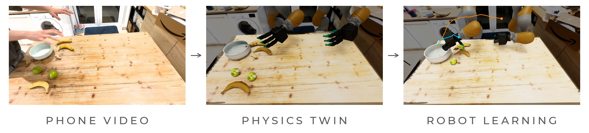
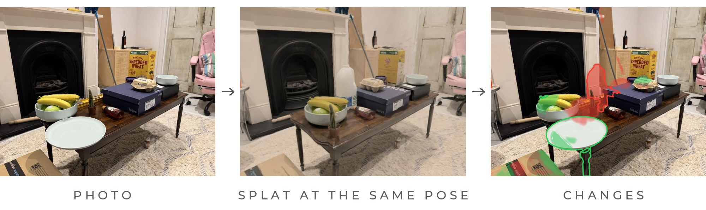

Archie McMurray
Robot learning, 3D vision and simulation. MRes Medical Robotics and Image-Guided Intervention, Imperial College London.
Projects

Can Androids Dream of Clean Tables?
An automated pipeline that turns unlabelled phone videos of a person tidying a table into physics twins, a world model of the task, and two-arm robot policies, with four-finger hands and with parallel grippers, trained in Isaac Sim.
world modelsRLreal-to-simIsaac Sim
Where did my stuff go
Film a room once, come back with a few photos from anywhere, and get an object-by-object list of what moved, appeared or disappeared, with a confidence for each. Built on a Gaussian splat of the room and a checker trained only on edits of that room.
3D visionchange detectionGaussian splattingSingle-frame 3D surgical worlds
MRes thesis at the Hamlyn Centre: lifting a single laparoscopic frame to a textured 3D scene and rendering new endoscope views with exact correspondences and labels, released as an NVIDIA Omniverse extension. Dense 3D correspondence pretraining improves few-label organ segmentation over a matched 2D control.
3D visionself-supervised learningOmniversePaper in preparation (IPCAI 2027)
Vision-based RL navigation for autonomous endoscopy
PPO policies in Isaac Lab that steer an endoscope from monocular RGB alone and transfer zero-shot to colon anatomies never seen in training, with depth-aware features learned from synthetic data and distilled for real-time control.
RLsim-to-realIsaac LabLanguage-driven cobot control
BEng thesis: frontier VLMs plan long-horizon tasks from natural language while PPO skills trained in Isaac Lab execute contact-rich manipulation, with VLM semantics grounded in scene geometry.
VLMsRLIsaac Sim